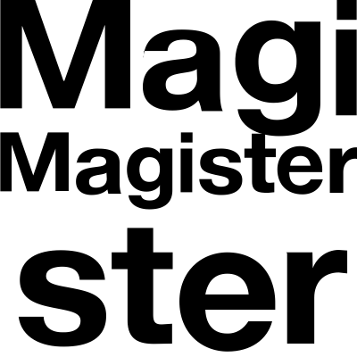
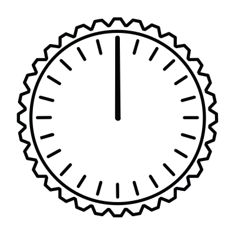

Dogfood note. Icon marks here are real vectors generated by QuiverAI (arrow-1.1) via its API, recolored to the system — not hand-drawn primitives. The wordmark is set in a licensed face (generated type garbles — see the §03 reject). A designer still refines the winning vector in Figma/Illustrator before delivery. Generative tools — Quiver / Flora / GPT-Image / Figma — are optional: the skill runs without them, but results are substantially better with them. Flagged per the skill's honesty rule.
01
The Brief
from .agents/brand.md
A logo is never judged in a vacuum. Pull the emotional target, the muses, and the competitor set first. Magister is the console the whole marketing operation is armed, monitored, and fired from — Mission Control is the chosen direction.
Brand
Magister — AI marketing operations. One deck; every channel armed, monitored, fired on command.
Emotional target
CommandPrecisionConfidence
Muses
Apollo mission control · Teenage Engineering OP-1 (machined dials, amber readout) · the launch trajectory.
Competitor set
Jasper · Copy.ai · Writer · HubSpot · Mutiny · AdCreative.ai (see §10, real marks).
Type license
Chakra Petch (OFL) · IBM Plex Sans (OFL) · JetBrains Mono (OFL). All commercially licensed.
Name to set
Magister — the wordmark is explored in full, not just the initial.
02
Inspiration
real sources → one distilled idea
Apollo Mission Control (NASA, PD) — banks of consoles → the single command point
Teenage Engineering OP-1 (CC BY-SA) — the machined dial → the mark's ring & pointer
Apollo 11 launch (NASA, PD) — the trajectory → the pointer aimed up-and-to-the-right
The thematic idea (distill a bigger concept into one form)
One operator, one command point, running the whole operation — the machined dial you set and fire from.
The deck (ring) · the amber pointer aimed up-and-to-the-right = armed and climbing. Amber is the one reserved color. Every element traces to a muse and the feeling.
03
Sketches — walk the ugly
every option shown as a mark + "Magister" lockup
Sketch broadly and show the range. Each option is shown with the wordmark "Magister" beside it so orientation reads. You don't pick one per family — you pick the ones that work. In a real run these are generated in Figma / FigJam / Quiver or an image model; tiles here are stand-ins.
Typographic — the wordmark "Magister"
— the full word, its letterforms & expression
advances
Magister
Clean cut · Chakra Petch 700confident, even color
advances
Magister▪
One ownable detail — the command indexà la one-sparkle
Magister
Spaced capseven tracking or bust
MAGISTER
Lighter, widerreads calmer, less command

Generated wordmark (Quiver)type garbles — set in a licensed face, don't generate
Magister
Wordmark + mark lockuphow it actually rides
Pictorial
— a stylized representation (Apple-style)
advances
Magister
Aperture / iris — "open the channel"carried into abstract too

Magister
Console dial (Quiver)reads as a clock — too literal
Abstract
— evokes the feeling without depicting (Nike-style)
advances
Magister
Command point — ring + armed pointerdial distilled
advances
Magister
Aperture, abstractedsame idea, both families
advances
Magister
Trajectory — the launch arcclimbing metric, abstracted
// Icon marks generated with QuiverAI (arrow-1.1) — real vectors, not hand-drawn. What advances: two wordmark cuts (real licensed type), the aperture (both families), the command point, the trajectory. Rejects shown too (the clock-dial; the garbled generated wordmark). Not one-per-family — the best few.
04
Shortlist + my recommendation
present the best · give an opinion
The three worth resolving — each shown as its real lockup with "Magister." All hold in one value and survive the favicon; the tiebreaker is distinct + traceable.
Abstractrecommended
Magister
A · The Command Point
The machined dial distilled to ring + armed pointer. Traces to the muse (the deck you command) and the feeling. Not a swoosh, shield, or rocket — ownable in the category.
Abstract / pictorialalt
Magister
B · The Aperture
Four iris blades + core = "open every channel." Distinct and precise, but reads a shade "camera/lens" — slightly off command.
Typographicalt
Magister▪
C · Wordmark + index
The full wordmark carried by one ownable detail — the amber command index. Strong and safe; leans on the detail to feel distinct.
// Recommendation: A, the Command Point — with the C wordmark as its logotype. If the client hesitates, resolve in black & white first (§07) before sign-off.
05
The mark
centered lockup · no tagline
Magister
One idea, in a phrase
The command point. One operator, one dial, the whole operation.
Lockup
Mark optically centered with the wordmark; the gap = the mark's radius. No tagline — the wordmark stands alone.
Color
One confident color — monochrome: bone on dark, ink on light. Amber is its brand-forward one-color treatment. No second accent.
How it was made
A real vector, generated by QuiverAI (arrow-1.1), then recolored. A designer still refines curve tension + the cap-height-to-mark ratio in Illustrator/Figma before delivery — but this is a true vector, not a hand-drawn sketch.
06
Construction
golden ratio applied to the mark itself
Generated, then checked against the barQuiverAI produced a real, unified single-path vector. The guides behind it are the bar a designer checks it against — golden-ratio harmony (1.618 steps), one clean construction.
It's a true vectorEditable paths, not a raster or a hand-typed <path>. Drops straight into Figma/Illustrator for refinement — the thing agent-drawn SVG never gave us.
Trust the eyeOptical > numeric: the designer nudges the needle so it reads aimed, and balances the ring weight by eye — math gets close, the eye finalizes.
Unify & deliverConfirm one merged path per color, outline any strokes, then export the variant set via Logo Package Express.
Still to resolveNeedle taper & terminal, hub-to-ring weight, and the cap-height-to-mark lockup ratio — the refinement a designer closes before delivery.
07
Versions
B&W first · one-color · reversed
Resolve in one value before color. The pointer's position carries the meaning, not its hue — so it survives with all color removed. A one-color orange version is the workhorse for stamps, merch, and single-ink print.
Black / on white
White / reversed
One-color · orange
Grayscale
Full color / on ground
// Passes B&W: recognizable with hue removed. One-color orange holds because the form, not the color contrast, does the work.
08
Spacing & size
clear space = x · centered lockup
Clear space & alignment
Magister
// Wordmark cap-height matched to mark height; optical centers aligned; gap = x. Wordmark rises to the guide line — no dead air.
Minimum size
16px (min)
24px
40px
64px+
// Mark-only below ~120px lockup width — the wordmark tracking collapses before the mark does.
09
Simple — the implementation grid
one construction, every context
Simple is an observation across the set, not a property of one file. Same mark, every context — no second drawing to survive the small sizes.
Magister — Mission
Browser tab · 16pxholds
Social avatar · circleholds
App icon · roundedholds
1-color / on whiteholds
Reversed / on darkholds
Grayscale / faxholds
Over a busy photoneeds knockout
Large / heroholds
10
Distinct — on the shelf
the real competitor marks
Distinctiveness only exists relative to the field. Here are the actual competitor marks beside ours — run the tests against reality, not stand-ins.
Jasper
Copy.ai
Writer
HubSpot
Mutiny
Magister
Cover-the-name
Mark alone: the ring + aimed pointer reads as ours — the field is soft glyphs and sprockets. Passes.
Disappearance
In the lineup it's the only instrument — it doesn't dissolve into the rounded-tech set. Passes.
Resemblance
The rejected ascending-triangle (§03) collided with Vercel; ring+pointer echoes no famous mark. Clean — verify vs. these real marks at full res.
// Real marks pulled live (favicon service). For final sign-off, drop in full-resolution vector logos.
11
SAD verdict
per dimension · with evidence · not averaged
Simplethe grid, §09
pass
One construction holds 16px → hero, 1-color, reversed, grayscale, one-color orange. Only caveat: over a busy photo it needs a knockout — noted, not fatal.
Appropriatethe feeling, §01
pass
The machined ring + amber pointer produces command, precision, confidence for an operator audience — armed and climbing, not playful, not generic-corporate.
Distinctthe shelf, §10
weak → pending
Distinct vs. the category (an instrument among glyphs) and free of a famous-mark collision. Held at "weak" until the shelf is verified against full-res real logos and the rough-cut construction is resolved so the distinctiveness is real, not implied by a sketch.
// SAD is not averaged — one fail sinks the mark. Nothing fails; Distinct is honestly "weak-pending" until a resolved vector + the real-logo shelf confirm it. That is the gate before delivery.
12
Applied
the case is made in context
Sign-off is won here: the mark applied — small things and big things — with the objective case that it stands out in this market.
Magister
AVA REYES · MISSION DIRECTOR ava@magister.io · +1 415 555 0142 magister.io
MagisterSignage
Run it like mission control.
Magister
Billboard
Magister
@magister
Social profile
cap
tee
sticker
Ephemera
app.magister.io/mission
Magister
Product nav + favicon
13
Spec → .agents/brand.md
what gets written back
## LogoMark: The Command Point — machined ring + amber pointer, aimed up-and-right (abstract). One idea: one operator, one dial, the whole operation.
Lockup: Horizontal — mark + "Magister" (Chakra Petch 700), optically centered, gap = mark radius. No tagline. No vertical stack (not needed).
Color: Ring/hub = Bone #ECE4D6 (Ink #131017 on light). Pointer = Action amber #E8830C — the one reserved color, used once.
Versions: full-color · black · white · grayscale · one-color orange · inverted (RGB / Apple RGB). Export via Logo Package Express.
Clear space: ≥ x on all sides, x = ring radius. Wordmark rises to the guide line.
Min size: 16px mark (favicon floor); mark-only below ~120px lockup width.
App icon: separate delivery — rounded + square, 240px @2x, ±name.
Misuse: don't recolor the pointer; no second accent; no tagline in the lockup; no simpler redraw for small sizes; never a system font for the wordmark.
### SAD verdict Simple pass · Appropriate pass · Distinct weak-pending (resolve vector + verify real-logo shelf).
### Status Rough cut — needs a resolved vector pass (Figma / Illustrator) before delivery.
14
Delivery — download the files
on sign-off · the client houses these
On finalize, hand over a downloadable, ordered package. Pick a color variant, then download each asset in SVG / PNG / JPEG. Order: full color first, then the full mark, the icon, the social avatar, the app icon.
Full logo
icon + logotype
Icon only
the mark, standalone
Social avatar
square, icon centered
App icon
rounded square
Magister — Logo/01 · full-color/ magister-logo · magister-icon · avatar · app-icon → svg · png · jpg
02 · inverse/ (icon keeps amber, wordmark flips to white — for dark)
03 · white/ all-white
04 · black/ all-black
05 · grayscale/ grayscale
// Each color variant folder holds all four assets in all three formats. App icon also delivered ± name, rounded + square (separate delivery). Real deliveries run through Logo Package Express; this is the same ordered set, downloadable here.
MAGISTER · LOGO IDENTITY PRESENTATION · MISSION CONTROL · DOGFOOD v3 · real marks by QuiverAI · logo-design 1.8.0